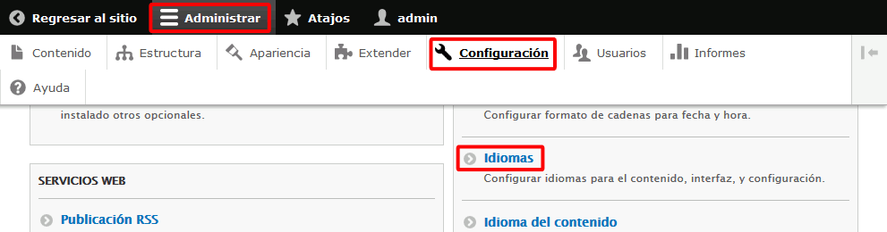
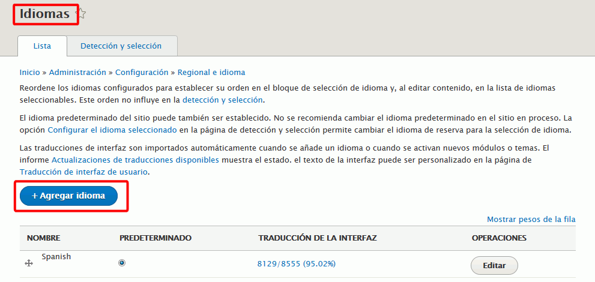
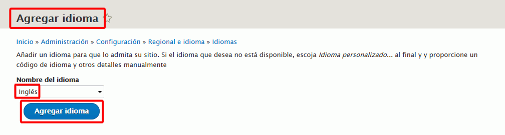
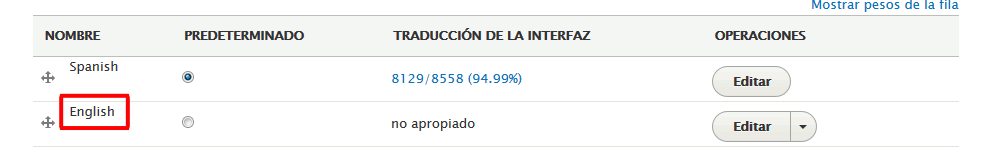
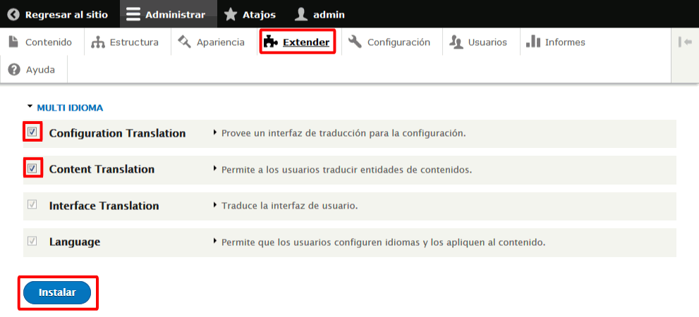
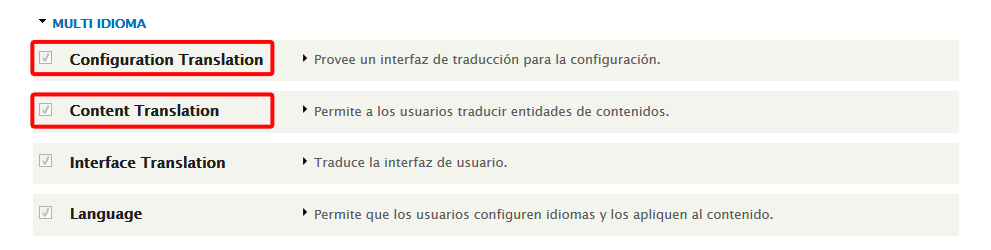
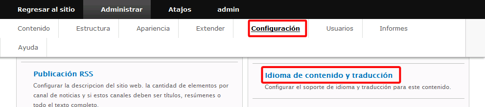
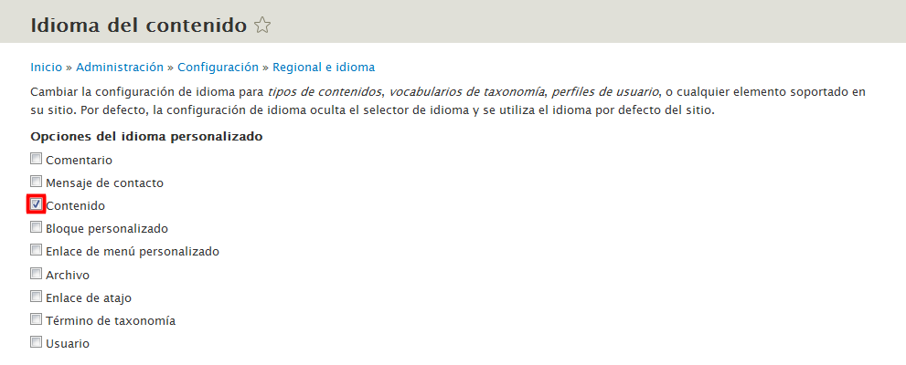
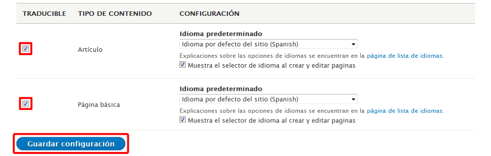

Estas soluciones están pendientes de actualizar para Drupal 8.
Estas soluciones están pendientes de actualizar para Drupal 8.
En esta lección se proponen soluciones detalladas de los ejercicios (4) de Drupal. Se recomienda intentar realizarlos primero sin recurrir a estas soluciones.
 Por completar
Por completar
Como administrador, abra la página Configuración > Idiomas:

En la página de Idioma, haga clic en Agregar idiomas:

En la lista de idioma seleccione el idioma Inglés y haga clic en Agregar idioma:

Tras unos segundos, el idioma se mostrará en la lista de idiomas:

Como administrador, abra la página Administrar > Extender, marque la casilla de los módulos Configuration Translation y Content Translation y haga clic en Instalar:

Tras unos segundos, los módulos se mostrarán instalados:

En Configuración > Idioma de contenido y traducción, active la opción del idioma personalizado para Contenido, active la traducción para Artículos y páginas básicas y guarde la configuración.
Como administrador, abra la página Configuración > Idioma de contenido y traducción:

Marque la casilla del tipo de contenido a traducir. En el ejemplo se ha marcado únicamente Contenido pero para una traducción completa de un sitio web sería necesario marcar también casillas.

Se mostrarán los distintos tipos de contenido y sus elementos. Marque Artículo y Página básica, manteniendo marcados sus elementos (que no se muestran en la captura) y haga clic en Guardar configuración.

En Contenido, seleccione uno de los artículos y elija la pestaña Translate. Agregue la traducción al inglés y publíquela.
 Comprobar si funciona o no. Ver bug 2189267
Comprobar si funciona o no. Ver bug 2189267
 Por escribir
Por escribir
 Por escribir
Por escribir
 Por escribir
Por escribir